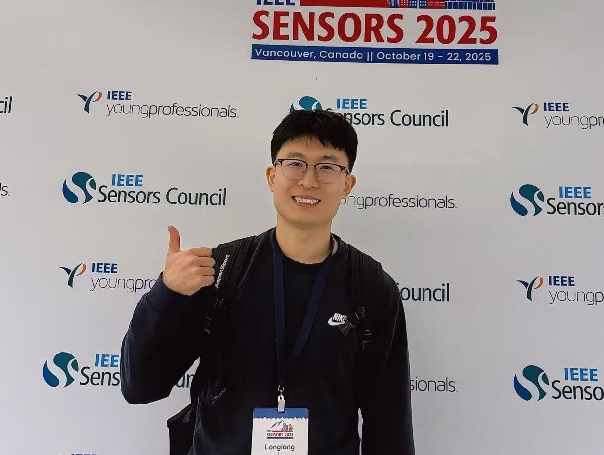

Current Position
PhD Student
Department of Mechanical Engineering, Chonnam National University, Gwangju, South Korea.

PhD Student
Department of Mechanical Engineering, Chonnam National University
Gwangju, South Korea
I develop MEMS-enabled and bioelectronic sensing platforms for engineered cardiac tissues, with an emphasis on multimodal electromechanical recording and drug cardiotoxicity evaluation.
Research Interests
I am a PhD student in Mechanical Engineering at Chonnam National University, working on sensing-driven platforms for cardiac tissue engineering, in vitro disease modeling, and quantitative drug screening.
Current Position
Department of Mechanical Engineering, Chonnam National University, Gwangju, South Korea.
Research Focus
Multimodal electromechanical sensing, engineered cardiac tissue monitoring, and translational BioMEMS platforms for cardiotoxicity analysis.
Education
PhD in Mechanical Engineering, Chonnam National University (2022-Present). B.S. in Mechanical Engineering, Wenzhou University (2018-2022).
Academic Links
My current work connects sensor engineering, tissue models, and translational screening systems.
01
Designing flexible microsystems and MEMS-based sensor architectures for biological signal acquisition in soft tissue environments.
02
Building integrated platforms to evaluate contraction, maturation, and tissue-level coupling in engineered cardiac constructs.
03
Combining strain, electrical, and structural readouts to observe dynamic heart-tissue behavior in real time.
04
Translating cardiac microsystems into quantitative screening tools for safety assessment, long-term monitoring, and disease-model studies.
Selected projects that represent my recent academic and engineering trajectory.
Building a biomimetic hypoxic cardiac model with integrated sensing workflows for electromechanical analysis under disease-relevant conditions.
Developing a 3D cardiac tissue platform for parallelized pharmacological testing with integrated electromechanical readouts.
Investigating how graphene-based conductive microenvironments modulate cardiomyocyte communication, maturation, and functional electrophysiology.
Representative papers highlighting my recent work in bioelectronic sensing, cardiac tissue platforms, and translational biomaterials.
A quick view of the full academic record documented across the dedicated archive pages.
For collaboration, discussion, or academic exchange, feel free to reach out through the channels below.